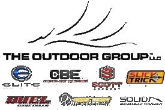
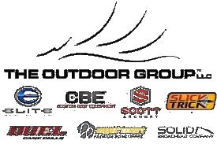

"I'm an aspiring filmmaker entering the professional world of content creation. Always chasing the next story, I’m happy to travel anywhere to get the shot. With a deep love for the mountains and the ocean, I bring a unique perspective to visual storytelling. Constantly looking to refine my skills, I offer a creative eye and relentless drive to every project."
GET INSPIRED BY VERICAL CONTENT
My Work
CHECK OUT OUR WORK


 
